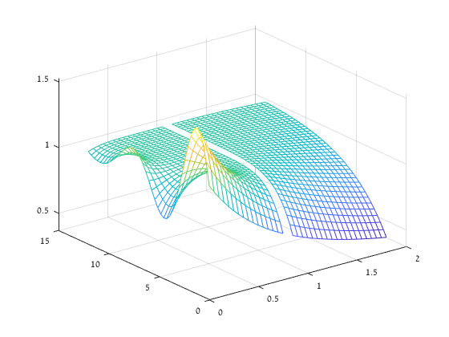
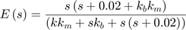
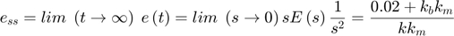
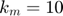
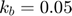
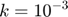

Contents
Student ID
ID = 316098052; disp(ID)
316098052
1 Second-order system mesh plot
zeta = 0.2:0.05:2; omega_t = 2:0.3:14; [ZETA,OMEGA_T] = meshgrid(zeta,omega_t); beta = (1-ZETA.^2).^(1/2); tetha = acos(ZETA); Y_T = 1-(1./beta).*exp(-1.*ZETA.*OMEGA_T).*sin(OMEGA_T.*beta+tetha); mesh(ZETA,OMEGA_T,Y_T)
2 Inverted pendulum on a cart
2. State-space equations.
The linearized model of the system:
![$$\left[\begin{array}{c}
\dot{x}_{1}\\
\dot{x}_{2}\\
\dot{x}_{3}\\
\dot{x}_{4}
\end{array}\right]=\left[\begin{array}{cccc}
0 & 1 & 0 & 0\\
0 & 0 & \frac{-mg}{M} & 0\\
0 & 0 & 0 & 1\\
0 & 0 & \frac{Mg}{Ml} & 0
\end{array}\right]\cdot\left[\begin{array}{c}
x_{1}\\
x_{2}\\
x_{3}\\
x_{4}
\end{array}\right]+\left[\begin{array}{c}
0\\
\frac{1}{M}\\
0\\
\frac{1}{-Ml}
\end{array}\right]\cdot u\left(t\right)$$](ex4_eq07578196507586627308.png)
3. Controlable and observable.
The matrix cont is full rank and therefore the system is contorlable.
The matrix obs is full rank and therefore the system is observable.
syms m g l M C = [1 0 0 0; 0 1 0 0]; A = [0 1 0 0; 0 0 (-m*g)/M 0;0 0 0 1; 0 0 (g/l) 0]; B = [0; 1/M; 0; -1/(M*l)]; cont = [B A*B A^2*B A^3*B] rank(cont) obs = [C ; C*A ; C*(A^2) ; C*(A^3)] rank(obs)
cont =
[ 0, 1/M, 0, (g*m)/(M^2*l)]
[ 1/M, 0, (g*m)/(M^2*l), 0]
[ 0, -1/(M*l), 0, -g/(M*l^2)]
[ -1/(M*l), 0, -g/(M*l^2), 0]
ans =
4
obs =
[ 1, 0, 0, 0]
[ 0, 1, 0, 0]
[ 0, 1, 0, 0]
[ 0, 0, -(g*m)/M, 0]
[ 0, 0, -(g*m)/M, 0]
[ 0, 0, 0, -(g*m)/M]
[ 0, 0, 0, -(g*m)/M]
[ 0, 0, -(g^2*m)/(M*l), 0]
ans =
4
4 DC motor control
1.Steady state error:
The system's error function in laplace domain:

The error's steady state response to a ramp unit using the final value theorem:

2. Required K calculation:
For  and .

syms k k_m k_b k = 10^-3; k_m = 10; k_b = 0.02; s =tf('s') H = (k*k_m+s*k_b*(1-k_m))/(k*k_m+s*k_b+s*(s+0.02)) ramp = H*(1/s); figure(1) step(H,20) figure(2) step(ramp,20)
s =
s
Continuous-time transfer function.
H =
-0.18 s + 0.01
-------------------
s^2 + 0.04 s + 0.01
Continuous-time transfer function.
The two plots are acceptable by the derivative link between them.
function [zeros,poles] = pzplot2(a,b) poles = complex(roots(b)); max_pole = max(real(poles)); zeros = complex(roots(a)); axe = max([max(abs(zeros)) max(abs(poles))]); figure(1) plot(zeros,'o','MarkerEdgeColor','red','MarkerSize',10) hold on plot(poles, 'x','MarkerEdgeColor','blue','MarkerSize',10) grid, axis([-axe-1 axe+1 -axe-1 axe+1]) hold on xL = xlim; yL = ylim; line([0 0], yL); %x-axis line(xL, [0 0]); %y-axis hold on patch_x = [max_pole; max_pole; axe+1; axe+1]; patch_y = [-axe-1; axe+1; axe+1; -axe-1]; patch(patch_x,patch_y,[0,0.8,0.8],'edgeAlpha',0.1); alpha(0.3) hold off title('Pole-Zero map') xlabel('Real Part (\sigma)') ylabel('Imaginary Part (jw)') end